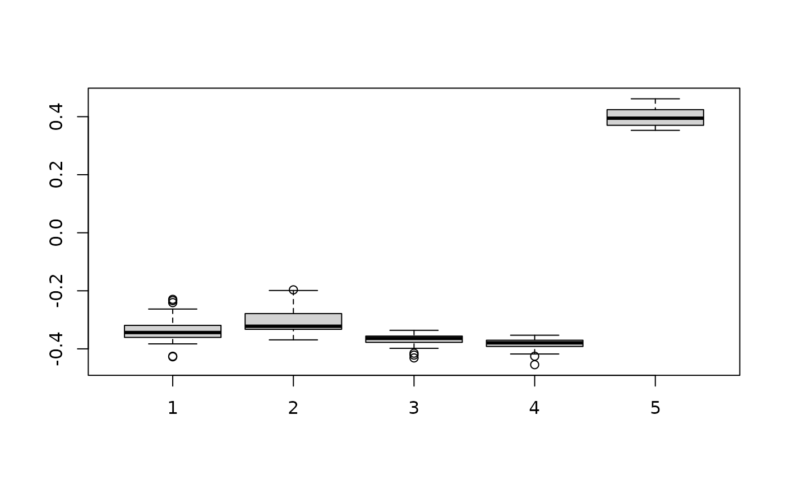

Compute the density of simulated doublets
Source:R/computeDoubletDensity.R
computeDoubletDensity.RdIdentify potential doublet cells based on the local density of simulated doublet expression profiles.
This replaces the older doubletCells function from the scran package.
Usage
computeDoubletDensity(x, ...)
# S4 method for ANY
computeDoubletDensity(
x,
size.factors.norm = NULL,
size.factors.content = NULL,
k = 50,
subset.row = NULL,
niters = max(10000, ncol(x)),
block = 10000,
dims = 25,
BNPARAM = KmknnParam(),
BSPARAM = bsparam(),
BPPARAM = SerialParam()
)
# S4 method for SummarizedExperiment
computeDoubletDensity(x, ..., assay.type = "counts")
# S4 method for SingleCellExperiment
computeDoubletDensity(x, size.factors.norm = sizeFactors(x), ...)Arguments
- x
A numeric matrix-like object of count values, where each column corresponds to a cell and each row corresponds to an endogenous gene.
Alternatively, a SummarizedExperiment or SingleCellExperiment object containing such a matrix.
- ...
For the generic, additional arguments to pass to specific methods.
For the SummarizedExperiment and SingleCellExperiment methods, additional arguments to pass to the ANY method.
- size.factors.norm
A numeric vector of size factors for normalization of
xprior to PCA and distance calculations. IfNULL, defaults to size factors derived from the library sizes ofx.For the SingleCellExperiment method, the default values are taken from
sizeFactors(x), if they are available.- size.factors.content
A numeric vector of size factors for RNA content normalization of
xprior to simulating doublets. This is orthogonal to the values insize.factors.norm, see Details.- k
An integer scalar specifying the number of nearest neighbours to use to determine the bandwidth for density calculations.
- subset.row
See
?"scran-gene-selection".- niters
An integer scalar specifying how many simulated doublets should be generated.
- block
An integer scalar controlling the rate of doublet generation, to keep memory usage low.
- dims
An integer scalar specifying the number of components to retain after the PCA.
- BNPARAM
A BiocNeighborParam object specifying the nearest neighbor algorithm. This should be an algorithm supported by
findNeighbors.- BSPARAM
A BiocSingularParam object specifying the algorithm to use for PCA, if
dis notNA.- BPPARAM
A BiocParallelParam object specifying whether the neighbour searches should be parallelized.
- assay.type
A string specifying which assay values contain the count matrix.
Details
This function simulates doublets by adding the count vectors for two randomly chosen cells in x.
For each original cell, we compute the density of neighboring simulated doublets and compare it to the density of neighboring original cells.
Genuine doublets should have a high density of simulated doublets relative to the density of its neighbourhood.
Thus, the doublet score for each cell is defined as the ratio of densities of simulated doublets to the density of the original cells.
Densities are calculated in low-dimensional space after a PCA on the log-normalized expression matrix of x.
Simulated doublets are projected into the low-dimensional space using the rotation vectors computed from the original cells.
For each cell, the density of simulated doublets is computed for a hypersphere with radius set to the median distance to the k nearest neighbour.
This is normalized by niters, k and the total number of cells in x to yield the final score.
The two size factor arguments have different roles:
size.factors.normcontains the size factors to be used for normalization prior to PCA and distance calculations. This defaults to the values returned bylibrarySizeFactorsbut can be explicitly set to ensure that the low-dimensional space is consistent with that in the rest of the analysis.size.factors.contentis much more important, and represents the size factors that preserve RNA content differences. This is usually computed from spike-in RNA and ensures that the simulated doublets have the correct ratio of contributions from the original cells.
It is possible to set both of these arguments as they are orthogonal to each other.
Setting size.factors.content will not affect the calculation of log-normalized expression values from x.
Conversely, setting size.factors.norm will not affect the ratio in which cells are added together when simulating doublets.
References
Lun ATL (2018). Detecting doublet cells with scran. https://ltla.github.io/SingleCellThoughts/software/doublet_detection/bycell.html
See also
findDoubletClusters, to detect doublet clusters.
scDblFinder, which uses a hybrid approach involving simulation and overclustering.
More detail on the mathematical background of this function is provided in the corresponding vignette at
vignette("computeDoubletDensity", package="scDblFinder").
Examples
# Mocking up an example.
set.seed(100)
ngenes <- 1000
mu1 <- 2^rnorm(ngenes)
mu2 <- 2^rnorm(ngenes)
mu3 <- 2^rnorm(ngenes)
mu4 <- 2^rnorm(ngenes)
counts.1 <- matrix(rpois(ngenes*100, mu1), nrow=ngenes) # Pure type 1
counts.2 <- matrix(rpois(ngenes*100, mu2), nrow=ngenes) # Pure type 2
counts.3 <- matrix(rpois(ngenes*100, mu3), nrow=ngenes) # Pure type 3
counts.4 <- matrix(rpois(ngenes*100, mu4), nrow=ngenes) # Pure type 4
counts.m <- matrix(rpois(ngenes*20, mu1+mu2), nrow=ngenes) # Doublets (1 & 2)
counts <- cbind(counts.1, counts.2, counts.3, counts.4, counts.m)
clusters <- rep(1:5, c(rep(100, 4), ncol(counts.m)))
# Find potential doublets.
scores <- computeDoubletDensity(counts)
boxplot(split(log10(scores), clusters))
